HTTP port 80 — Accès public ✔
La page Apache s'affiche correctement en HTTP — le SG-Web et la NACL-Public autorisent bien le port 80 depuis 0.0.0.0/0.
Sécurité Cloud · Architecture réseau multi-couches sur AWS · Security Groups + NACLs + EC2
Ce lab met en place une infrastructure réseau AWS complète et sécurisée, organisée en deux zones distinctes — un subnet public exposant un serveur web et un subnet privé hébergeant les couches backend et base de données. La sécurité est implémentée en deux couches complémentaires : les Security Groups (pare-feu stateful au niveau instance) et les Network ACLs (pare-feu stateless au niveau subnet).
VPC lab-s6-vpc (10.0.0.0/16)
Région eu-west-1 (Irlande)
AZ eu-west-1a (euw1-az2)
Subnet public 10.0.0.0/20
Subnet privé 10.0.128.0/20
lab-s6-vpc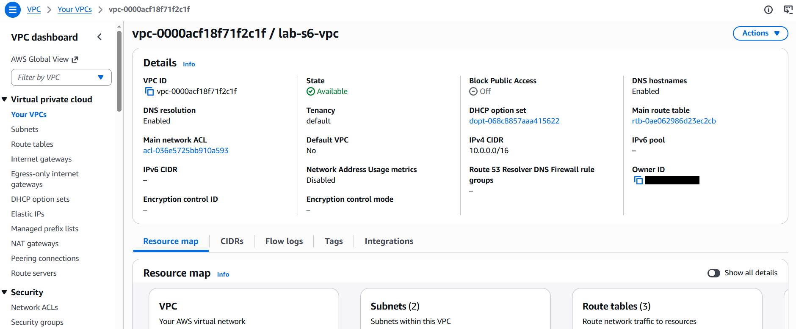
| VPC ID | vpc-0000acf18f71f2c1f |
| CIDR IPv4 | 10.0.0.0/16 |
| Subnets | 2 (1 public · 1 privé) |
| Route tables | 3 |
| DNS hostnames | Activé |
| Région / AZ | eu-west-1 / euw1-az2 |
Les Security Groups sont des pare-feux stateful appliqués au niveau de chaque instance EC2 : une réponse à une connexion autorisée est automatiquement permise, sans règle sortante explicite. Trois SG sont créés selon le principe du moindre privilège et de la chaîne de confiance (chaque SG n'accepte que la source strictement nécessaire).
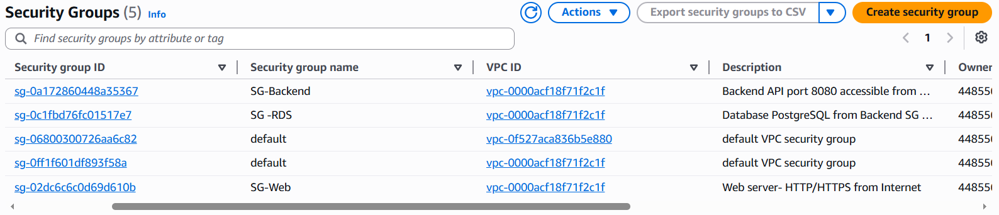
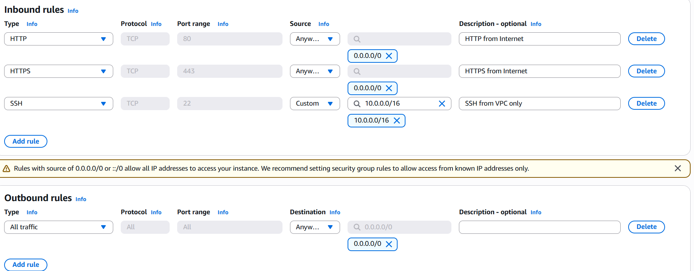
| Direction | Type | Port | Source | Justification |
|---|---|---|---|---|
| Inbound | HTTP | 80 | 0.0.0.0/0 | Accès web public |
| Inbound | HTTPS | 443 | 0.0.0.0/0 | Accès web sécurisé public |
| Inbound | SSH | 22 | 10.0.0.0/16 | Administration depuis le VPC uniquement — jamais depuis Internet |
| Outbound | All traffic | All | 0.0.0.0/0 | Trafic sortant libre (réponses HTTP, mises à jour) |
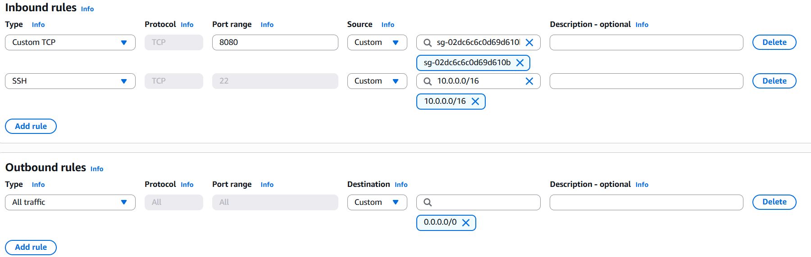
| Direction | Type | Port | Source | Justification |
|---|---|---|---|---|
| Inbound | Custom TCP | 8080 | SG-Web (sg-02dc6c6c0d69d610b) | Seul le serveur web peut appeler l'API — chaîne de confiance SG→SG |
| Inbound | SSH | 22 | 10.0.0.0/16 | Administration interne VPC uniquement |
| Outbound | All traffic | All | 0.0.0.0/0 | Réponses et appels sortants |
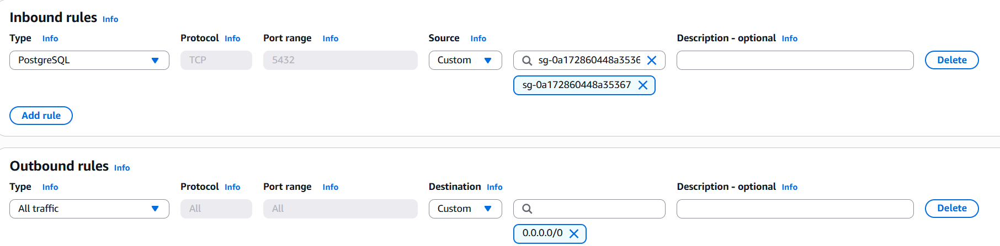
| Direction | Type | Port | Source | Justification |
|---|---|---|---|---|
| Inbound | PostgreSQL | 5432 | SG-Backend (sg-0a172860448a35367) | Seule la couche backend peut accéder à la BDD — isolation totale |
| Outbound | All traffic | All | 0.0.0.0/0 | Réponses autorisées |
Principe clé — Référencement SG→SG : au lieu d'autoriser un bloc CIDR, SG-Backend et SG-RDS référencent directement l'ID du Security Group source. Cette approche est plus sécurisée et plus flexible : toute instance ajoutée au SG-Web aura automatiquement accès au backend, sans modifier les règles.
Les NACLs sont des pare-feux stateless appliqués au niveau du subnet : chaque paquet est évalué indépendamment, ce qui impose de définir explicitement les règles dans les deux sens. Les règles sont évaluées dans l'ordre croissant de leur numéro et s'arrêtent à la première correspondance. Un Deny * All implicite clôt chaque liste.
Création de la NACL associée au VPC lab-s6-vpc :
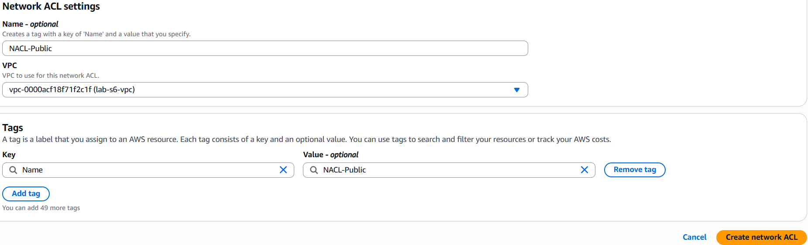
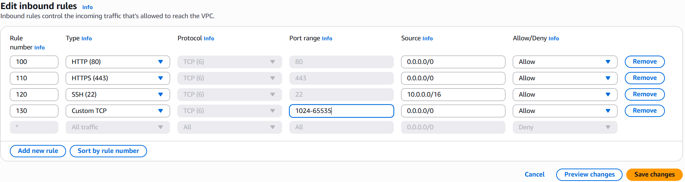
| # | Type | Port | Source |
|---|---|---|---|
| 100 | HTTP | 80 | 0.0.0.0/0 |
| 110 | HTTPS | 443 | 0.0.0.0/0 |
| 120 | SSH | 22 | 10.0.0.0/16 |
| 130 | Ephemeral | 1024-65535 | 0.0.0.0/0 |
| * | All traffic | All | 0.0.0.0/0 — Deny |
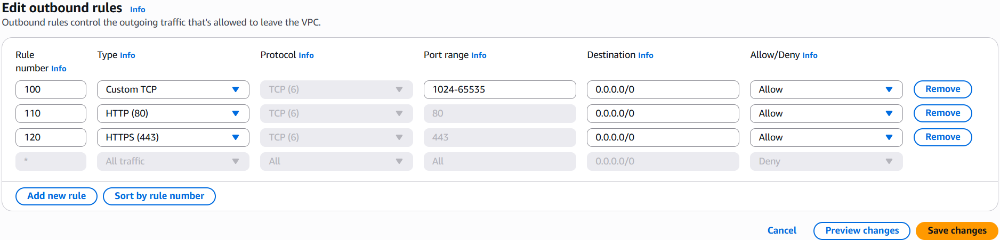
| # | Type | Port | Dest. |
|---|---|---|---|
| 100 | Ephemeral | 1024-65535 | 0.0.0.0/0 |
| 110 | HTTP | 80 | 0.0.0.0/0 |
| 120 | HTTPS | 443 | 0.0.0.0/0 |
| * | All traffic | All | 0.0.0.0/0 — Deny |
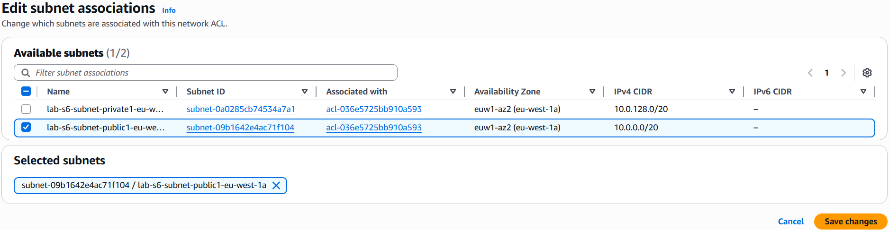
Création de la NACL associée au subnet privé :
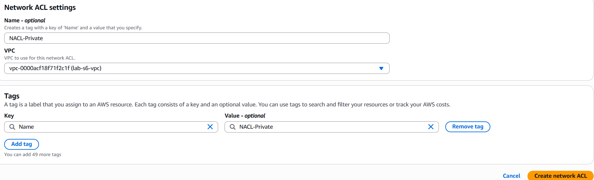
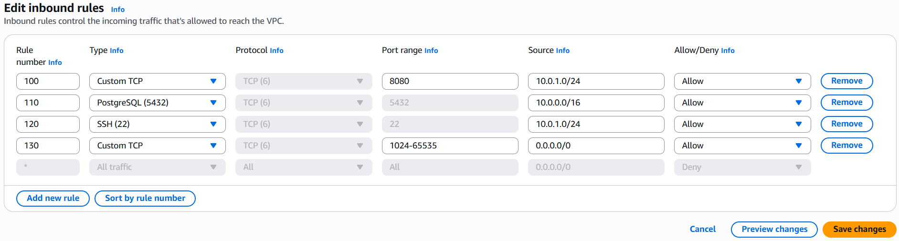
| # | Type | Port | Source |
|---|---|---|---|
| 100 | Custom TCP | 8080 | 10.0.1.0/24 |
| 110 | PostgreSQL | 5432 | 10.0.0.0/16 |
| 120 | SSH | 22 | 10.0.1.0/24 |
| 130 | Ephemeral | 1024-65535 | 0.0.0.0/0 |
| * | All traffic | All | 0.0.0.0/0 — Deny |
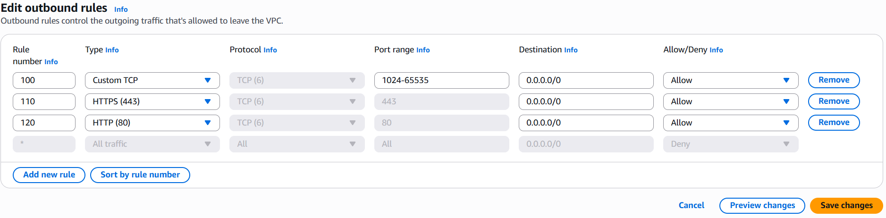
| # | Type | Port | Dest. |
|---|---|---|---|
| 100 | Ephemeral | 1024-65535 | 0.0.0.0/0 |
| 110 | HTTPS | 443 | 0.0.0.0/0 |
| 120 | HTTP | 80 | 0.0.0.0/0 |
| * | All traffic | All | 0.0.0.0/0 — Deny |
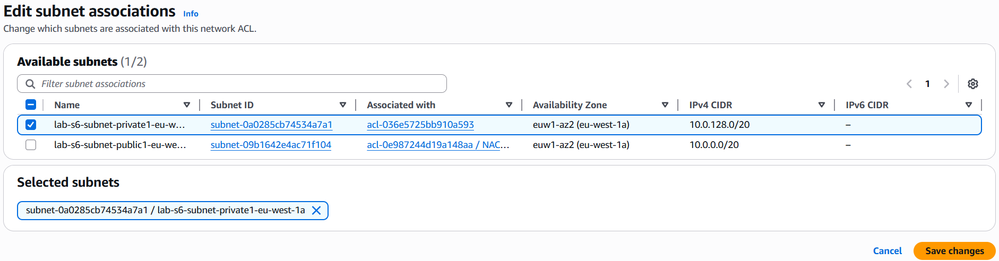
Pourquoi les ports éphémères (1024-65535) ? Les NACLs étant stateless, elles n'ont aucune mémoire des connexions. Quand un client initie une connexion HTTP vers le port 80, la réponse du serveur revient sur un port temporaire aléatoire (ephemeral) choisi par l'OS client, entre 1024 et 65535. Sans cette règle, les réponses seraient bloquées et le site web serait inaccessible malgré une règle entrante sur le port 80.
Une paire de clés lab-s6-key est générée en RSA avec format .pem (compatible OpenSSH) pour l'accès SSH aux instances.
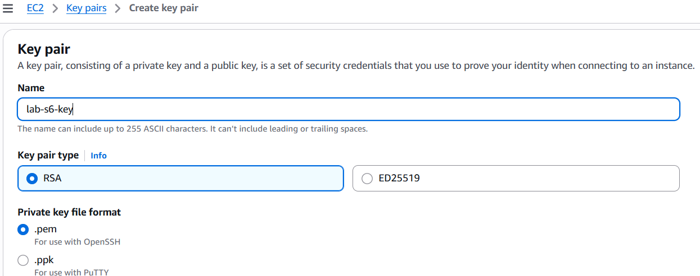
Le serveur web est placé dans le subnet public avec IP publique auto-assignée et rattaché au Security Group SG-Web.
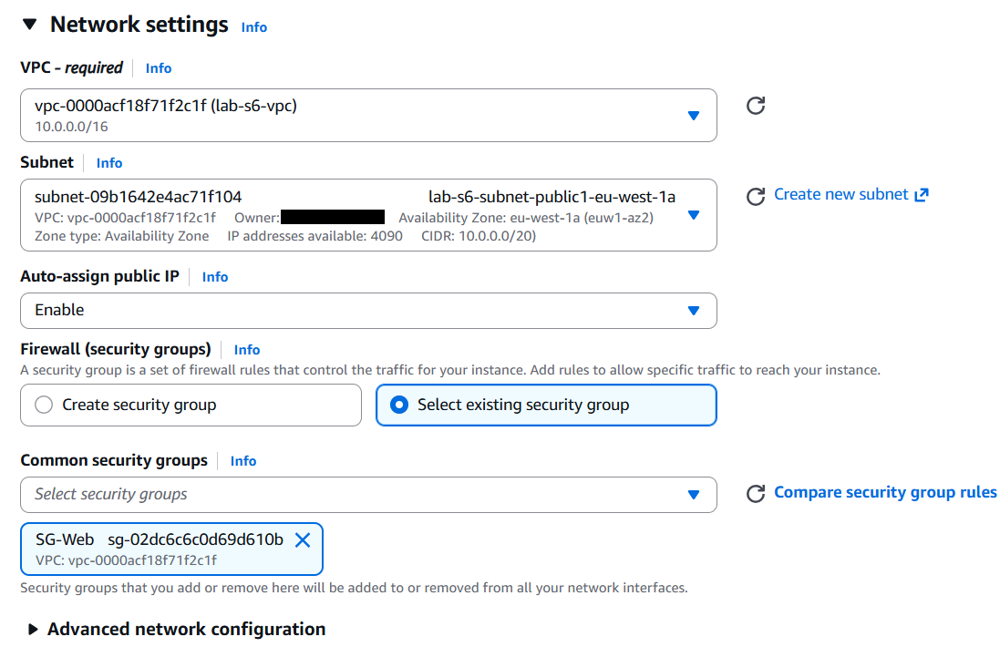
Un script bash est injecté via User Data pour installer et démarrer Apache automatiquement au premier démarrage de l'instance, et créer une page HTML de validation :
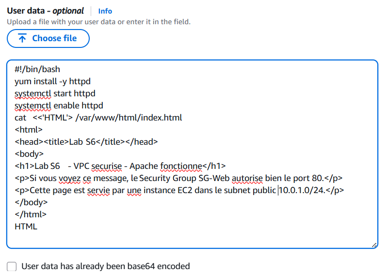
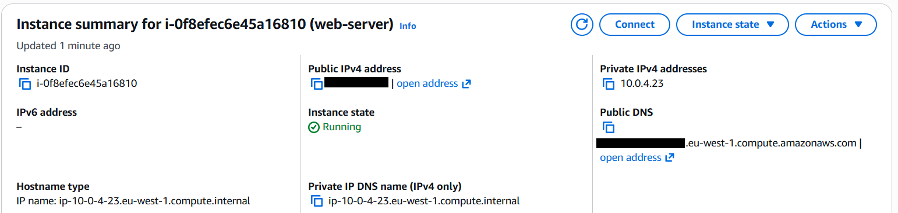
| Instance ID | i-0f8efec6e45a16810 |
| Nom | web-server |
| État | ✔ Running |
| IP privée | 10.0.4.23 |
| DNS public | *.eu-west-1.compute.amazonaws.com |
La page Apache s'affiche correctement en HTTP — le SG-Web et la NACL-Public autorisent bien le port 80 depuis 0.0.0.0/0.
"Impossible d'accéder à cette page" — comportement attendu : aucun certificat SSL n'est configuré, Apache n'écoute pas sur le port 443.
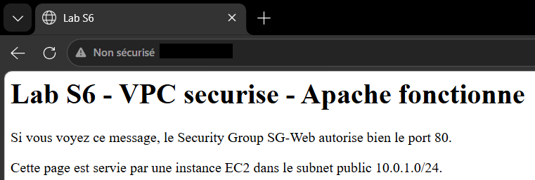
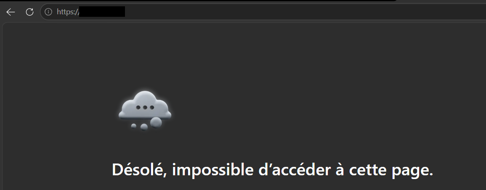
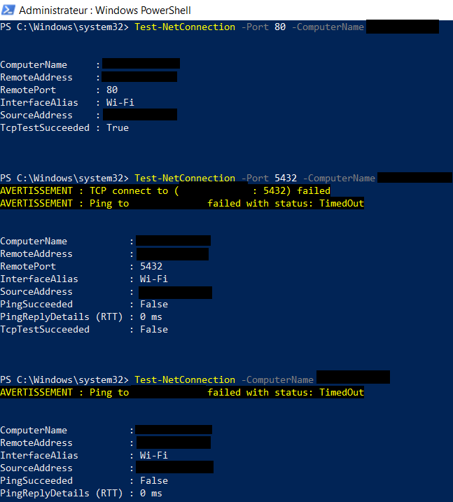
| Test | Commande | Résultat | Interprétation |
|---|---|---|---|
| HTTP port 80 | Test-NetConnection -Port 80 |
TcpTestSucceeded: True ✔ | Port 80 accessible depuis Internet |
| PostgreSQL port 5432 | Test-NetConnection -Port 5432 |
TCP connect failed ✔ | BDD inaccessible depuis Internet — SG-RDS n'autorise que SG-Backend |
| Ping ICMP | Test-NetConnection |
TimedOut ✔ | ICMP bloqué par SG-Web et NACL-Public — pas de règle ICMP explicite |
Conclusion : l'architecture en deux couches (Security Groups + NACLs) fonctionne conformément aux attentes. Le serveur web est accessible depuis Internet uniquement sur les ports explicitement autorisés, la base de données est totalement invisible depuis l'extérieur du VPC, et l'administration SSH est restreinte au périmètre interne du VPC. La défense en profondeur est assurée : même si un Security Group était mal configuré, la NACL constituerait un deuxième filet de sécurité au niveau subnet.